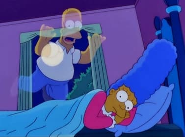
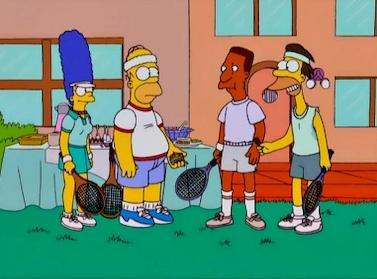

|
Nombre del capítulo |
Número del capítulo |
|  |
La casa-árbol del terror XI |
01 |
|
Historia de dos ciudades |
02 |
|
Papá payaso loco |
03 |
|
Lisa la ecologista |
04 |
|
Homer contra la dignidad |
05 |
|
El ordenador que acabó con Homer |
06 |
|
El gran timo |
07 |
|
Skinner y su concepto de un día de nieve |
08 |
|
HOMЯ |
09 |
|
Chiromami |
10 |
|
El peor episodio de la historia |
11 |
|  |
La amenaza del tenis |
12 |
|
La tierra de los simios |
13 |
|
Los nuevos chicos del ¡puaf! |
14 |
|
El hambriento, hambriento Homer |
15 |
|
Hasta lueguito cerebrito |
16 |
|
El safari de los Simpson |
17 |
|
Trilogía del error |
18 |
|
Nos vamos a Jubilandia |
19 |
|
Hijos de un bruto menor |
20 |
|
Cuentos populares |
21 |